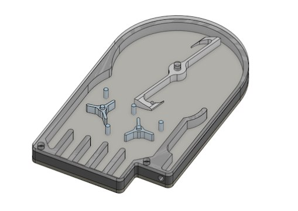
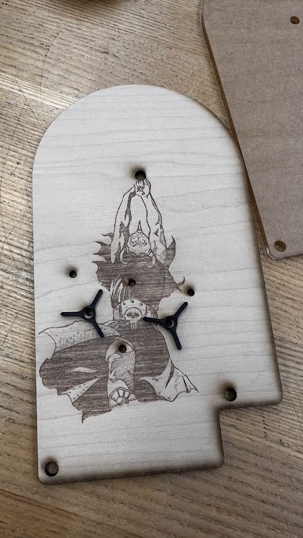
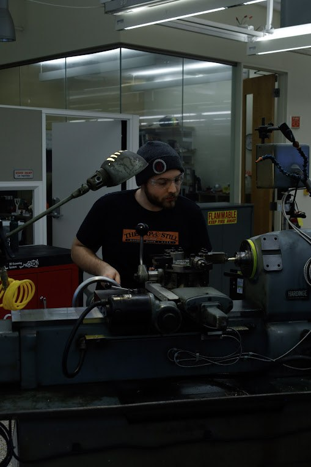
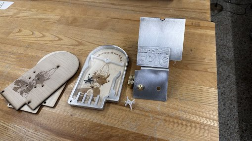
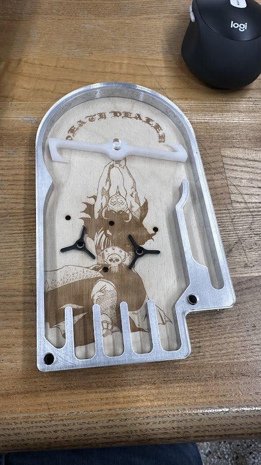
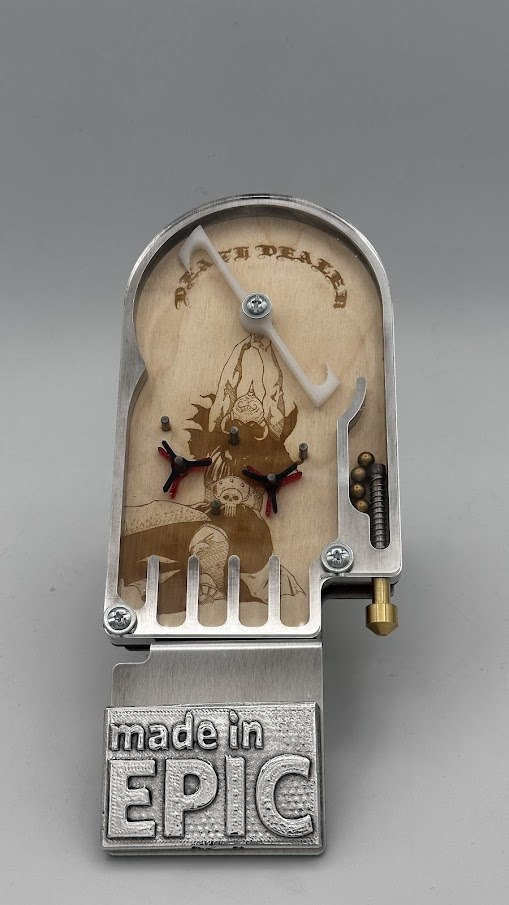

Bagatelle Pinball Machine
Designed and fabricated parts for a fully functioning mechanical pinball machine using CAD and fabrication equipment such as a manual lathe, laser cutter, CNC mill, and manual drill press. The bagatelle was assembled with strict dimensional tolerances to tolerate the necessary precision needed for this project.
End to End engineering
Overview
The bagatelle pinball machine was a design challenge that went after one of the core concepts of engineering, how to make an idea come to life. We were tasked with designing a fully functional mechanical bagatelle pinball machine from scratch, relying completely on self-fabricating each part on our own, without the help of off the shelf substitutes.
The project was completed through the Boston University's LEAP Life program and Engineering Product Innovation Center (EPIC), which emphasized real hands on skills on par with those of fabrication shops.
From Idea to Reality
Designing in CAD
I designed and modeled each part of the Bagatelle in Onshape, a CAD software, each part was then added to an assembly to assure the final design would work as intended. The assembly was made so that any changes to the individual parts would propagate to the assembly, allowing easy adjustments to the design.

Frame and Playfield Fabrication
The metal frame was cut with a water metal cutter. The playfield was cut from wood on a laser cutter, the design for my playfield was from an artist I like and took design inspiration from. I traced over a section of artwork to create a design that was easily vectorized, I then matched up the art with my main spinner in my design, allowing me to have the playfield appear as if the character is holding the spinner. High precision was needed in order to allow for the placement of the main spinner, as well as the small bumpers and secondary spinners. The acrylic cover as well as the secondary spinners were cut on the same machine.

Machining Spinner and Plunger
The main spinner was cut using a CNC mill requiring high precision and a number of additional functions to allow for a clean cut to make the sloped appearance of the double axe. The Plunger was made out of a single stock of brass and cut on a manual lathe.


test Fitting and Iteration
After fabrication all parts were test fitted and assembled. The secondary spinners were redesigned and cut on the laser cutter for gameplay and aesthetic adjustments


Outcomes
Fully playable Bagatelle machine built from scratch
- All critical parts of the design met required tolerances allowing easy assembly of the final product
- Gameplay and aesthetic blend for a design that is not only interesting to look at, but fun to play as well
- Final product is fully playable, allowing for proper variations in gameplay from the spinners
- Context
- BU LEAP Life · EPIC
- Tools Used
- CNC mill, manual lathe, laser cutter, waterjet, drill press
- Software
- Onshape
- Year
- 2026